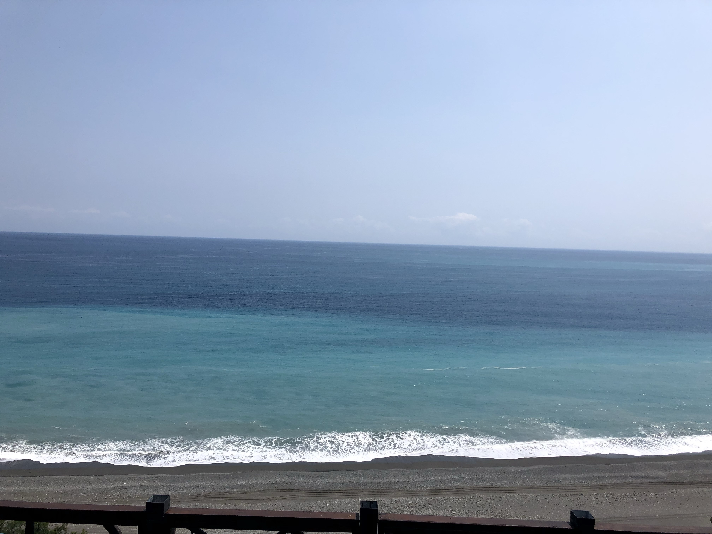

Customer Behavior Analysis
Investigating repeat purchases, returning customers, order frequency, and purchasing patterns in a large online retail dataset.
Computer Science B.S. · Mathematics Minor
> whoami
I’m Brooke, a senior Computer Science student and Mathematics minor who enjoys cleaning real-world datasets, asking useful questions, and turning the answers into models, visualizations, and clear conclusions.
About
I originally leaned toward software engineering, but the part I kept enjoying most was the investigation: what does the data actually say? I like starting with something imperfect, cleaning it carefully, testing an idea, and seeing whether the evidence supports the story I expected.
My mathematics minor strengthens that process with probability, linear algebra, optimization, and statistical reasoning, while computer science gives me the programming foundation to build reliable analyses, models, and data tools.
Selected work
Currently
Investigating repeat purchases, returning customers, order frequency, and purchasing patterns in a large online retail dataset.
Strengthening the statistics behind model evaluation, uncertainty, hypothesis testing, and why a model behaves the way it does.
I’m especially interested in the point where an analysis stops being a chart and starts helping someone decide what to do next.
Skills
Experience
Stone Point Capital · New York, NY
Add your strongest measurable internship accomplishments here once finalized.
Education
B.S. Computer Science · Minor in Mathematics
Expected May 2027
Relevant coursework: Foundations of Computation, Intermediate C++, Intermediate Java, Intermediate Python, Discrete Mathematics, Probability, Database Theory & Practice.
Let’s connect
Reach me at brooke.ojemen@gmail.com.
Beyond the data
.jpg)
